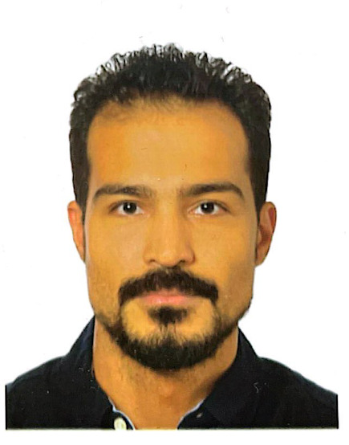

Senior Power Electronics Control Engineer · Filderstadt, Germany
Hello! I am a development engineer specializing in power electronics, hardware development, and control systems for high-voltage converters and electric motor drives. I obtained my M.Sc. in Electrical Engineering at the Technical University of Munich (TUM), where I focused on power electronics, control systems, and energy systems. Prior to that, I obtained my B.Sc. in Electrical Engineering at Alexandria University.
I am currently a Senior Power Electronics Control Engineer at Flex in Filderstadt, working on the control design and software implementation of a high-power on-board charger (OBC) for Ford electric vehicles. My day-to-day work spans model-based design of PFC, HV-DC, and DC stages; V-Model development; and HIL rapid prototyping. I have international R&D experience across Germany, the United States, and Egypt, having previously worked at MKS Inc., Panasonic Industrial Devices, HILTI, and BMW Motorrad.
My primary research focus is centered around developing advanced control strategies for high-power converters in electromobility and grid applications. I am particularly interested in model predictive control for DAB converters, motor control, grid-tied converters, and wide-bandgap device-based topologies for EV fast charging.
I am always open to collaboration and discussion about research. If you are interested in power electronics, advanced converter control, or electromobility, please feel free to reach out!
Power Electronics for Electromobility · HV DC-DC Converters · On-Board Chargers (OBC) · Model Predictive Control · Dual Active Bridge (DAB) · Wide-Bandgap (GaN/SiC) Devices · Motor Control · Grid-Tied Converters · Multiport Charging Systems · Model-Based Design & HIL
Full CV in PDF.